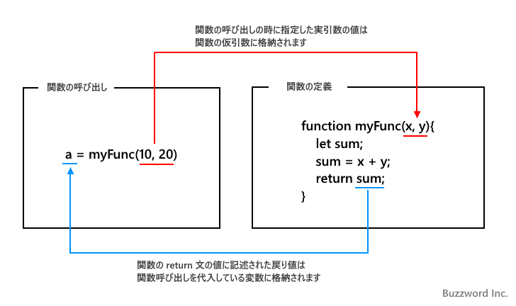

- Home ›
- JavaScript入門 ›
- 関数
関数を定義する
関数を利用するにはまず関数を定義する必要があります。関数では呼び出し元からどのような値を受け取るのか、呼び出された時にどのような処理をするのか、そして呼び出し元にどのような値を返すのかについて記述していきます。ここでは JavaScript にて関数を定義する方法について解説します。
関数を定義する
関数を定義する方法はいくつかありますが、ここでは function キーワードを使った関数の宣言による方法について解説します。書式は次の通りです。
function 関数名(引数1, 引数2, ...){
実行される処理1;
実行される処理2;
...
return 戻り値;
}
関数を宣言するには function のあとに関数名を指定します。関数名として付けることができる名前は変数の場合と同じく識別子を使って指定します。(詳しくは「変数名のルールとよく使われる命名記法」を参照して下さい)。
関数名のあとの ( から ) の中に引数を指定します。複数の引数がある場合にはカンマ(,)で区切って記述して下さい。この引数を仮引数とも呼びます。引数が無い場合には何も記述しなくてもいいのですがその場合でも ( と ) は記述する必要があります。
function 関数名(){
実行される処理1;
実行される処理2;
...
return 戻り値;
}
関数が呼び出された時に実行される処理を { から } のブロック内に記述してください。処理は一つでも複数でも記述できますが、関数の場合は処理が一つであってもブロックを表す { と } を省略することはできません。
関数の呼び出し元に値を返す場合には return 文を使用します。 retrun 文のあとに記述した値が関数の呼び出し元に返されます。 return 文が実行されると、関数内での処理は終了となります。必要なければ return 文は省略可能です。
次のサンプルを見てください。
function dispMessage(msg){
console.log(msg);
}
dispMessage という関数を定義しています。この関数は引数を一つ受け取り、関数のブロックの中で引数に格納された値をコンソールに出力します。
関数は定義しただけでは何も行いません。関数を利用するには関数を呼び出す必要があります。
関数を呼び出す
定義した関数を呼び出すには次のように記述します。
関数名(引数, ...);
関数を呼び出すには関数名を記述したあとで ( と ) の間に関数に渡す引数を記述します。複数の引数がある場合にはカンマ(,)で区切って記述して下さい。この引数を実引数とも呼びます。引数が無い場合には何も記述しなくてもいいのですがその場合でも ( と ) は記述する必要があります。
関数名();
関数からの戻り値を変数に格納する場合には、次のように = 演算子の左側に変数、右側に関数の呼び出しを記述してください。関数を呼び出したあと、関数から戻された値が変数に格納されます。
let 変数名 = 関数名(引数, ...);
関数を呼び出す時に指定した引数が関数にどのように渡されるのか、そして関数からの戻り値が関数の呼び出し側にどのように戻ってくるのかは次の図をみてください。

次のサンプルを見てください。
function dispHello(){
console.log('Hello');
console.log('JavaScript');
}
dispHello();
>> Hello
>> JavaScript
関数 dispHello を定義し、そのあとで関数を呼び出しています。関数は引数がなく、また戻り値もないので return 文も省略してあります。そして関数内ではコンソールに対して文字列を出力する処理が記述されています。
関数を定義したあとで関数を呼び出しています。呼び出された関数はブロック内の処理を順に実行するため、結果としてコンソールに対して Hello と JavaScript が出力されます。
今度は引数がある場合のサンプルを見てください。
function dispTotal(x, y){
let sum = x + y;
return sum;
}
let result = dispTotal(3, 4);
console.log(result);
>> 7
result = dispTotal(7, 1);
console.log(result);
>> 8
引数の指定方法や戻り値の詳しい使い方は別のページで解説しますので、ここではあまり気にしないでください。今回のサンプルでは関数は 2 つの引数を受け取り、 2 つの引数を加算した結果を関数の呼び出し元に返しています。関数を呼び出す側は 2 つの値を指定して関数を呼び出し、その結果を受け取ります。
関数は定義すると何度でも呼び出すことができます。同じ処理を何度も行う場合には関数として定義しておき、必要な時に関数を呼び出すようにすることでプログラムが分かりやすくすっきりとさせることができます。
※ 関数と関数の呼び出しを記述する位置については「関数と関数の呼び出しを記述する位置について」を参照されてください。
他の方法で関数を定義する
関数を定義する方法はこのページで解説した function キーワードを使った関数の宣言以外に 3 つの方法が用意されています。
(1) Function コンストラクタを使用した関数の定義：
let 変数名 = new Function('引数1', '引数2', ..., '実行される処理');
※ Function コンストラクタを使って関数式を定義する方法については「Functionコンストラクタを使って関数を定義する」を参照されてください。
(2) 関数リテラルを使った関数の定義：
let 変数名 = function(引数1, 引数2, ...){
実行される処理1;
実行される処理2;
...
return 戻り値;
};
※ 関数リテラルを使って関数式を定義する方法については「関数リテラルを使って関数を定義する(無名関数)」を参照されてください。
(3) アロー関数式を使った関数の定義：
let 変数名 = (引数1, 引数2, ...) => {
実行される処理1;
実行される処理2;
...
return 戻り値;
};
※ アロー関数式を使って関数式を定義する方法については「アロー関数式を使って関数を定義する」を参照されてください。
-- --
JavaScript にて関数を定義する方法について解説しました。
( Written by Tatsuo Ikura )

著者 / TATSUO IKURA
初心者～中級者の方を対象としたプログラミング方法や開発環境の構築の解説を行うサイトの運営を行っています。